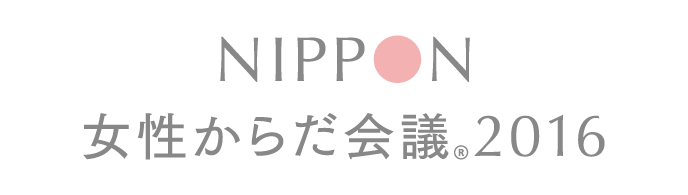
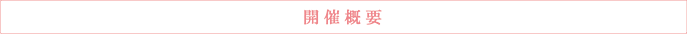
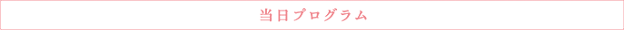
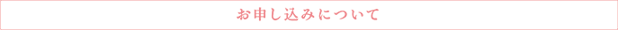
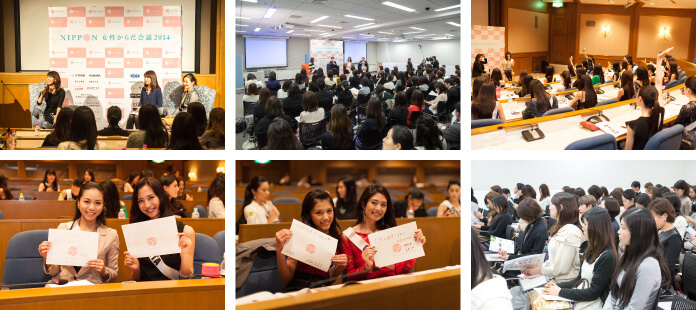

［日時］
平成28年11月6日（日）16:00～19:00（開場15:30）
無料子宮頸がん検診（要予約）13:00～15:00
ワンコイン託児（500円・要予約）受付開始 15:30
［会場］
ホテルメトロポリタンエドモント 千鳥の間
（東京都千代田区飯田橋三丁目10番8号）
［主催］
一般社団法人シンクパール
［協賛］
株式会社ジョイフルライフ、サクラファインテックジャパン株式会社、株式会社アンド・フォース、MSD株式会社、オムロンヘルスケア株式会社、バイエル薬品株式会社、株式会社ヘルスケアシステムズ、株式会社あすか製薬メディカル
［後援］
内閣府男女共同参画局、文部科学省、厚生労働省、経済産業省、公益社団法人日本医師会、公益社団法人日本産科婦人科学会、公益社団法人日本産婦人科医会、公益社団法人日本臨床細胞学会、公益社団法人日本婦人科腫瘍学会、認定NPO法人日本医療政策機構、NPO法人女性医療ネットワーク、NPO法人ラサーナ、認定NPO法人乳房健康研究会、認定NPO法人子宮頸がんを考える市民の会、乳がん・子宮頸がん検診促進議員連盟
［特別協力］
一般財団法人日本予防医学協会、AIBAOFFICE株式会社、一般社団法人ミス日本酒、女子未来大学、NEXT MEDIA “Japan In-depth”、NPO法人しんぐるまざあず・ふぉーらむ
（順不同）
［お問い合わせ先］
一般社団法人シンクパール（事務局：NIPPON女性からだ会議®2016実行委員会）
〒102-0094 東京都千代田区紀尾井町4番1号 新紀尾井町ビル3階
電話：03-6893-8089 FAX：03-4333-0437
Eメール：info@thinkpearl.jp

16:10～16:25
オープニングスピーチ「宇宙飛行士が実践！女性のヘルスケアを学ぶ」
宇宙飛行士 山崎直子
16:25～16:40
スピーチ「パイロット的健康学」
危機管理専門家 小林宏之
-
宇宙飛行士
山崎直子
-
危機管理専門家
小林宏之
17:00～17:45
セッション①「女性のからだ 聞きたいこと 伝えたいこと」
-
産婦人科医
慶應義塾大学名誉教授
内閣官房参与吉村泰典
-
産婦人科医
宋美玄
-
モデル
美優
-
モデル
藤森香衣
-
女性からだ会議®
ファウンダー難波美智代
17:45～18:30
セッション②「幸せな人生の選び方 – 健康から人生を考える - 」
-
産婦人科医・ウィミンズ・ウェルネス銀座クリニック院長
対馬ルリ子
-
女子未来大学
ファウンダー猪熊真理子
-
モデル
手話パフォーマー三城千咲
-
2016ミス日本酒
（Miss SAKE）田中沙百合
-
文部科学省 初等中等教育局 健康教育・食育課 課長
和田勝行
18:30～19:00
シンクパールアワード 女性からだ会議大賞発表
※11月からの子宮頸がん予防啓発月間にあわせ、当日は無料子宮頸がん検診(予約制)を行っています。
※美と健康のブース：食、睡眠や女性のがんに関する情報等を予定

先着100名までどなたでも無料でご参加頂けます。
お申し込みはinfo@thinkpearl.jpまで、①氏名 ②連絡先をお知らせください。担当者よりご連絡申し上げます。
＜子宮頸がん検診無料体験＞
当日は先着30名様に限り、子宮頸がんの無料検診（女性のみ）を「シンクパール検診車」にて行います。
ご希望の方はあわせて「検診希望」とお書き添えください。

＜山崎直子さんサイン入り写真集プレゼント＞
山崎直子さんのサイン入り写真集「瑠璃色の星」を参加者10名にプレゼントいたします。
